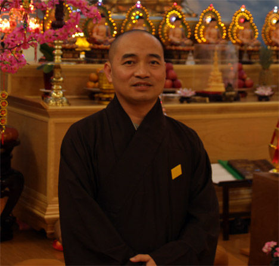
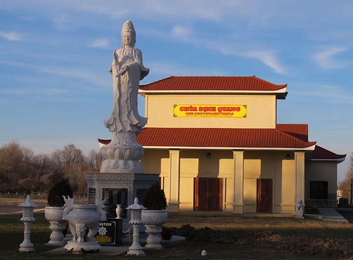

.svg.png)

About Dinh Quang Temple and
Venerable Thich Thong Chanh

Welcome to the official Dinh Quang Buddhist Temple in Springifeld Missouri. This site is cross-cultural.
No matter if you speak Vietnamese or English, this site welcomes you.
Venerable Thich Thong Chanh is the head monk at Dinh Quang Temple here in Springfield Missouri. He came
to America to study Buddhism in Chicago and build a temple in Springfield. His vision is to give locals
a comfortable place to share their beliefs without fear of ridicule. No matter if you are Mahayana,
Theravada, Zen or come from a certain sect, Dinh Quang Temple is open to you.
Ven. Thay as many call him teaches Mahayana Buddhism, but in Vietnam most don't give it a label. The core
teachings are based on the Four Noble Truths, Pali Canon and familiar texts that all Buddhists practice
and study.
Would you like a Dharma talk at your college or institution? Contact Master Thay on our contact page
here for more information.

Are you interested in learning more about Buddhism? The goal of Dinh Quang is to bring the precious teachings of the
Buddha to Springfield and beyond. Ven. Thay teaches and holds events for the local Vietnamese community. For the
English speaking community we meet every Sunday morning at 9 a.m., and Wednesday evenings at 6 p.m.
Dinh Quang also has a small library of books you can read in several languages from English, Vietnamese and Chinese.
Come in and meet during any of our events to inquire about them.
We are still a relatively new temple (the groundbreaking for our current building was in January of 2012), and as such, we need volunteers and support if we are to grow. The simplest way
to help is to share this site with your friends so Springfield will know about us.
Our beautiful statue in front of the temple weighs 12 tons, is 17 feet tall, and was installed in June of 2012.